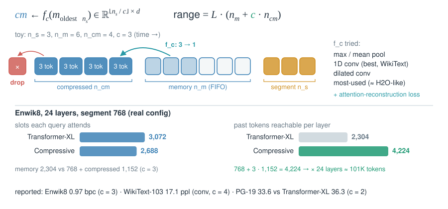
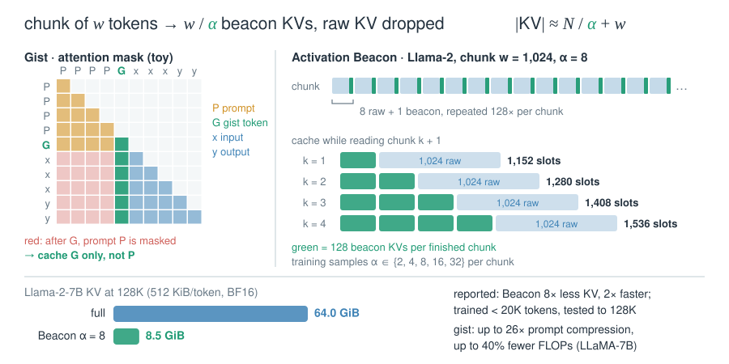
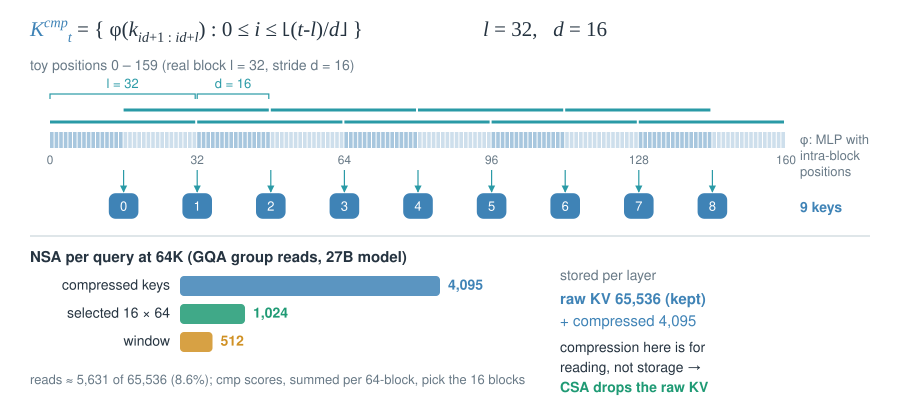
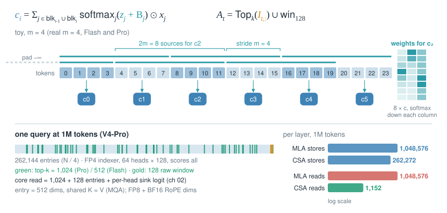
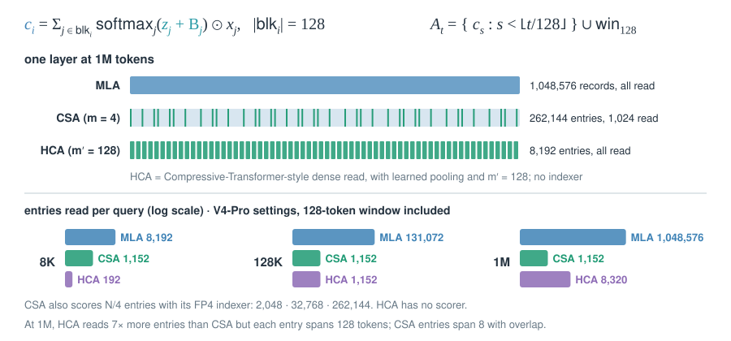
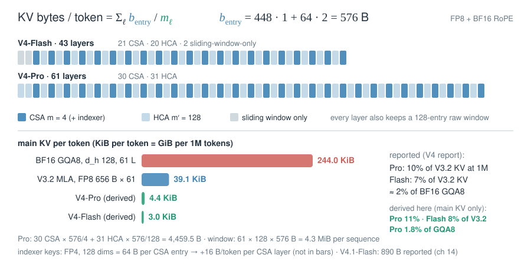

08 · Compress the sequence
Eviction deletes positions. Compression merges each run of m tokens into one learned record, so the cache grows as N/m instead of N.
Compressive Transformer: pool old memories, don’t drop them

- Why it works: pooling old memories at rate instead of dropping them lets a fixed slot budget cover times more history.
- Compare: it reads every pooled record densely, like HCA, with no top-k selection, unlike CSA.
- Converts from: the “most-used” keeps the most-attended memories, which is H2O-style eviction.
- Numbers (reported): 0.97 bpc on Enwik8 and 17.1 ppl on WikiText-103. On PG-19, 33.6 ppl vs 36.3 for Transformer-XL.
Gist tokens → Activation Beacon: learned summary tokens

- Learned records: special tokens are trained to absorb a span. The span’s own KV is then dropped.
- Gist vs Beacon: gist squeezes one prompt into a few tokens. Beacon compresses every chunk of a long input, in every layer.
- Train vs. infer: Beacon trains only new beacon projections and keeps the LLM frozen. A random per chunk lets one model serve several ratios.
- Not solved: both are added after pretraining. CSA and HCA build compression into pretraining.
NSA’s compression branch: the bridge

- Bridge: overlapping windows () and a learned pooler are the two ingredients CSA keeps.
- Two jobs: compressed keys are read densely. Their scores, summed per 64-token block and per GQA group, pick the selected blocks.
- Not solved: the raw KV stays for the selection and window branches, so storage grows. CSA drops it.
- Numbers: at 64K a query reads about 4,095 compressed keys, 16 × 64 selected tokens and a 512 window: 8.6% of the context.
CSA: compress by 4, then select top-k

- Two budgets at once: stored records drop to , and reads are capped at = 1,024 (Pro) or 512 (Flash).
- Overlap: entry sees blocks and through separate projections, yet one entry is emitted per 4 tokens.
- Indexer: DSA-style, 64 heads × 128 dims, with QK cached and multiplied in FP4. is below V3.2’s 2,048 because entries span several tokens.
- Storage: one 512-dim entry serves as both K and V. RoPE dims stay BF16, the rest FP8. Each head has a sink logit.
HCA: compress by 128, read everything

- No scorer: every finished entry is read, so there is no indexer cost and no top-k miss.
- Cost: reads still grow as . At 1M a query reads 8,320 entries, against CSA’s fixed 1,152.
- Why pair them: CSA keeps finer entries but must choose among them. HCA sees all of history, coarsely. V4 alternates the two by layer.
- Compare: the Compressive Transformer also read pooled memories densely, with = 2–4 and a bounded memory.
DeepSeek-V4: layer layout and bytes per token

- Layouts differ: “starts with two HCA layers” is true only for V4-Pro. V4-Flash starts with two sliding-window-only layers.
- Read the config:
compress_ratioslists for each layer: 0 = window only, 4 = CSA, 128 = HCA. - CSA dominates: CSA layers hold about 97% of Pro’s bytes per token. Each HCA layer adds only 4.5 B.
- Numbers (reported): at 1M, Pro needs 27% of V3.2’s per-token FLOPs and 10% of its KV. Flash needs 10% and 7%.
| Mechanism | Pooling | Records grow as | Read per query | Raw KV kept |
|---|---|---|---|---|
| Compressive Transformer | = 2–4, fixed | bounded () | all slots | no |
| Activation Beacon | = 2–32, learned tokens | all beacons + chunk | no | |
| NSA compression | = 32, stride 16, MLP | on top of | all + 16 blocks + 512 | yes |
| CSA (V4) | = 4, overlap 8, softmax pool | top-1,024 / 512 + 128 | no | |
| HCA (V4) | = 128, softmax pool | all + 128 | no |